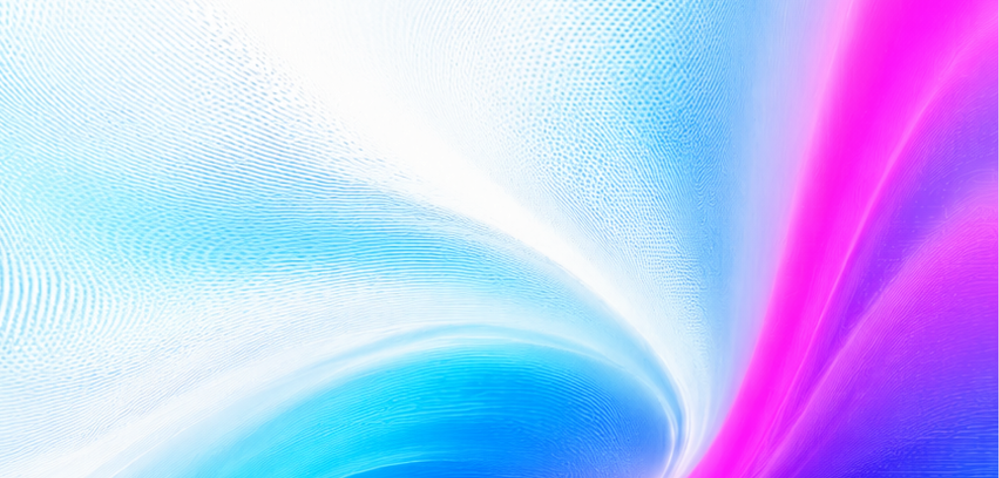

ビジョン
提供できること
使用イメージ
導入事例
お問い合わせ
APIでデータを繋ぐプラットフォーム
AIと事業を
強くする
Our Vison
つなぐことが、
強みになる時代へ。
Platform
プラットフォーム
連携が生む、
2つの価値
Point
01
賢いAIの土台をつくる
AIは、つながったデータの分だけ賢くなる。連携が、AIの燃料になる。
Point
02
業務実行の手足となる
AIは、つながったデータの分だけ賢くなる。連携が、AIの燃料になる。

事業の推進力を
生み出す
導入企業
200+
テキストが入ります。テキストが入ります。テキストが入ります。テキストが入ります。テキストが入ります。テキストが入ります。テキストが入ります。テキストが入ります。
連携実績
500+
稼働率
99.9%
最短リリース
1week
Strength 01
自動生成で開発スピードを加速
Strength 01
開発環境に
柔軟に適用
AI Assistant
Ask anything...
Strength 01
CLIへの対応
導入事例
1年で15種類の連携機能を提供！！外部データ連携のインフラとしてAnyflowを活用
HRテック
株式会社SmartHR
CRMと自社プロダクトを相互連携。実物の連携画面で商談を推進！！
セールステック
deex株式会社
単なるデジタル化でなく”真の営業DX”へ。100種以上のツール連携を推進中！！
セールステック
SALES GO 株式会社
⚙️ 調整パネル
▲


 AI Assistant
AI Assistant